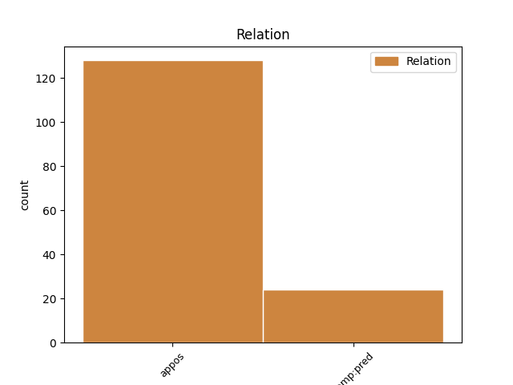
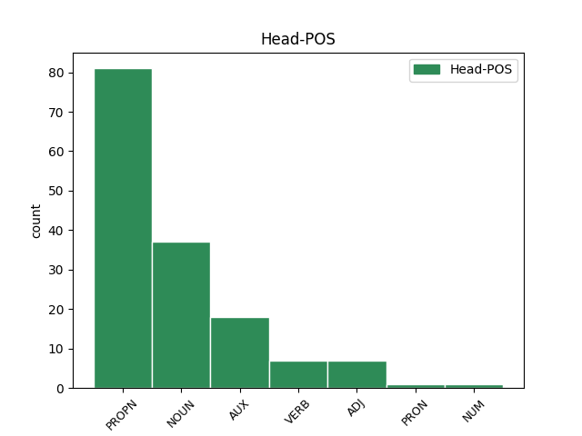
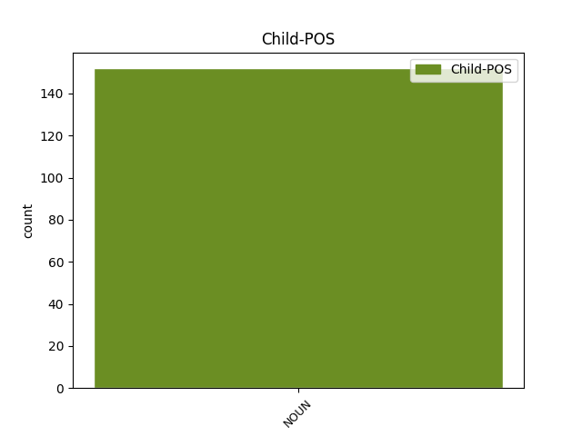

Distribution of features within this leaf



Agreement Rules sorted by frequency.
- When the dependent token is the appositional modifier(appos) of the head token, and the head token is PROPN and the dependent token is NOUN.
1 си _ _ _ _ 0 _ _ _
2 же _ _ _ _ 0 _ _ _
3 писана _ _ _ _ 0 _ _ _
4 бꙑшѧ _ _ _ _ 0 _ _ _
5 да _ _ _ _ 0 _ _ _
6 вѣрѫ _ _ _ _ 0 _ _ _
7 имете _ _ _ _ 0 _ _ _
8 ѣко _ _ _ _ 0 _ _ _
9 и҃с _ _ _ _ 0 _ _ _
10 естъ _ _ _ _ 0 _ _ _
11 х҃ъ христ(ос)ъ PROPN Ne Case=Nom|Gender=Masc|Number=Sing 0 _ _ _
12 с҃нъ сꙑнъ NOUN Nb Case=Nom|Gender=Masc|Number=Sing 11 appos _ LId=1|ref=JOHN_20.31
13 б҃жіи _ _ _ _ 0 _ _ _
14 ꙇ _ _ _ _ 0 _ _ _
15 да _ _ _ _ 0 _ _ _
16 вѣрѫѭште _ _ _ _ 0 _ _ _
17 живота _ _ _ _ 0 _ _ _
18 вѣчънааго _ _ _ _ 0 _ _ _
19 имате _ _ _ _ 0 _ _ _
20 въ _ _ _ _ 0 _ _ _
21 імѧ _ _ _ _ 0 _ _ _
22 его _ _ _ _ 0 _ _ _
1 Е҅гда _ _ _ _ 0 _ _ _
2 же _ _ _ _ 0 _ _ _
3 придетъ _ _ _ _ 0 _ _ _
4 параклитъ параклитъ NOUN Nb Case=Nom|Gender=Masc|Number=Sing 0 _ _ _
5 егоже _ _ _ _ 0 _ _ _
6 азъ _ _ _ _ 0 _ _ _
7 посълѭ _ _ _ _ 0 _ _ _
8 вамъ _ _ _ _ 0 _ _ _
9 отъ _ _ _ _ 0 _ _ _
10 о҃тца _ _ _ _ 0 _ _ _
11 д҃хъ доухъ NOUN Nb Case=Nom|Gender=Masc|Number=Sing 4 appos _ ref=JOHN_15.26
12 истинънꙑ _ _ _ _ 0 _ _ _
13 ꙇже _ _ _ _ 0 _ _ _
14 отъ _ _ _ _ 0 _ _ _
15 о҃тца _ _ _ _ 0 _ _ _
16 исходитъ _ _ _ _ 0 _ _ _
17 тъ _ _ _ _ 0 _ _ _
18 съвѣдѣтельствоуоутъ _ _ _ _ 0 _ _ _
19 о _ _ _ _ 0 _ _ _
20 мънѣ _ _ _ _ 0 _ _ _
1 Въ _ _ _ _ 0 _ _ _
2 единѫ _ _ _ _ 0 _ _ _
3 же _ _ _ _ 0 _ _ _
4 соботъ _ _ _ _ 0 _ _ _
5 мариѣ _ _ _ _ 0 _ _ _
6 магдалини _ _ _ _ 0 _ _ _
7 приде _ _ _ _ 0 _ _ _
8 за _ _ _ _ 0 _ _ _
9 оутра _ _ _ _ 0 _ _ _
10 еште _ _ _ _ 0 _ _ _
11 сѫшти бꙑти AUX V- Case=Dat|Gender=Fem|Number=Sing|Strength=Strong|Tense=Pres|VerbForm=Part|Voice=Act 0 _ _ _
12 тъмѣ тьма NOUN Nb Case=Dat|Gender=Fem|Number=Sing 11 comp:pred _ LId=1|ref=JOHN_20.1
13 на _ _ _ _ 0 _ _ _
14 гробъ _ _ _ _ 0 _ _ _
15 ꙇ _ _ _ _ 0 _ _ _
16 видѣ _ _ _ _ 0 _ _ _
17 камень _ _ _ _ 0 _ _ _
18 вьзѧтъ _ _ _ _ 0 _ _ _
19 отъ _ _ _ _ 0 _ _ _
20 гроба _ _ _ _ 0 _ _ _
1 Тома _ _ _ _ 0 _ _ _
2 же _ _ _ _ 0 _ _ _
3 единъ _ _ _ _ 0 _ _ _
4 отъ _ _ _ _ 0 _ _ _
5 обою _ _ _ _ 0 _ _ _
6 на _ _ _ _ 0 _ _ _
7 десѧте _ _ _ _ 0 _ _ _
8 нарицаемꙑ нарицати VERB V- Case=Nom|Gender=Masc|Number=Sing|Strength=Weak|Tense=Pres|VerbForm=Part|Voice=Pass 0 _ _ _
9 близнецъ близньць NOUN Nb Case=Nom|Gender=Masc|Number=Sing 8 comp:pred _ ref=JOHN_20.24
10 не _ _ _ _ 0 _ _ _
11 бѣ _ _ _ _ 0 _ _ _
12 тоу _ _ _ _ 0 _ _ _
13 съ _ _ _ _ 0 _ _ _
14 ними _ _ _ _ 0 _ _ _
15 егда _ _ _ _ 0 _ _ _
16 приде _ _ _ _ 0 _ _ _
17 и҃с _ _ _ _ 0 _ _ _
1 егда _ _ _ _ 0 _ _ _
2 же _ _ _ _ 0 _ _ _
3 придетъ _ _ _ _ 0 _ _ _
4 онъ онъ ADJ Pd Case=Nom|Gender=Masc|Number=Sing 0 _ _ _
5 д҃хъ доухъ NOUN Nb Case=Nom|Gender=Masc|Number=Sing 4 appos _ ref=JOHN_16.13
6 истинънꙑ _ _ _ _ 0 _ _ _
7 наставитъ _ _ _ _ 0 _ _ _
8 вꙑ _ _ _ _ 0 _ _ _
9 на _ _ _ _ 0 _ _ _
10 вьсѣкѫ _ _ _ _ 0 _ _ _
11 истинѫ _ _ _ _ 0 _ _ _
1 котерааго которꙑи PRON Pi Case=Gen|Gender=Masc|Number=Sing|PronType=Int 0 _ _ _
2 же _ _ _ _ 0 _ _ _
3 отъ _ _ _ _ 0 _ _ _
4 васъ _ _ _ _ 0 _ _ _
5 о҃ца отьць NOUN Nb Case=Gen|Gender=Masc|Number=Sing 1 appos _ ref=LUKE_11.11
6 въспроситъ _ _ _ _ 0 _ _ _
7 с҃нъ _ _ _ _ 0 _ _ _
8 хлѣба _ _ _ _ 0 _ _ _
9 еда _ _ _ _ 0 _ _ _
10 камень _ _ _ _ 0 _ _ _
11 подастъ _ _ _ _ 0 _ _ _
12 емоу _ _ _ _ 0 _ _ _
1 ꙇ _ _ _ _ 0 _ _ _
2 никтоже _ _ _ _ 0 _ _ _
3 възиде _ _ _ _ 0 _ _ _
4 на _ _ _ _ 0 _ _ _
5 небо _ _ _ _ 0 _ _ _
6 тъкмо _ _ _ _ 0 _ _ _
7 съшедꙑ сънити VERB V- Case=Nom|Gender=Masc|Number=Sing|Strength=Weak|Tense=Past|VerbForm=Part|Voice=Act 0 _ _ _
8 съ _ _ _ _ 0 _ _ _
9 небесе _ _ _ _ 0 _ _ _
10 с҃н сꙑнъ NOUN Nb Case=Nom|Gender=Masc|Number=Sing 7 appos _ LId=1|ref=JOHN_3.13
11 чⷭ҇кꙑ _ _ _ _ 0 _ _ _
12 сꙑ _ _ _ _ 0 _ _ _
13 на _ _ _ _ 0 _ _ _
14 небесе _ _ _ _ 0 _ _ _
Disagree Examples:
1 Ютроу оутро NOUN Nb Case=Dat|Gender=Neut|Number=Sing 3 comp:pred _ ref=MATT_27.1
2 же _ _ _ _ 0 _ _ _
3 бꙑвъшоу бꙑти AUX V- Case=Dat|Gender=Masc|Number=Sing|Strength=Strong|Tense=Past|VerbForm=Part|Voice=Act 0 _ _ _
4 Съвѣтъ _ _ _ _ 0 _ _ _
5 сътворишѧ _ _ _ _ 0 _ _ _
6 вьси _ _ _ _ 0 _ _ _
7 архиереи _ _ _ _ 0 _ _ _
8 и _ _ _ _ 0 _ _ _
9 старьци _ _ _ _ 0 _ _ _
10 людьсции _ _ _ _ 0 _ _ _
11 на _ _ _ _ 0 _ _ _
12 и҃са _ _ _ _ 0 _ _ _
13 ѣко _ _ _ _ 0 _ _ _
14 оубити _ _ _ _ 0 _ _ _
15 и _ _ _ _ 0 _ _ _
1 ꙇ _ _ _ _ 0 _ _ _
2 приѩсѧ _ _ _ _ 0 _ _ _
3 три _ _ _ _ 0 _ _ _
4 десѧти десѧть NUM Ma Case=Acc|Gender=Fem,Masc|Number=Plur 0 _ _ _
5 съребръникъ _ _ _ _ 0 _ _ _
6 цѣнѫ цѣна NOUN Nb Case=Acc|Gender=Fem|Number=Sing 4 appos _ ref=MATT_27.9
7 цѣненааго _ _ _ _ 0 _ _ _
8 егоже _ _ _ _ 0 _ _ _
9 цѣнишѧ _ _ _ _ 0 _ _ _
10 отъ _ _ _ _ 0 _ _ _
11 с҃нъ _ _ _ _ 0 _ _ _
12 и҃̆злвъ _ _ _ _ 0 _ _ _
1 Зачѧло _ _ _ _ 0 _ _ _
2 е҃ваньꙉлиѣ _ _ _ _ 0 _ _ _
3 и҃схва исоухристосовъ ADJ A- Case=Gen|Degree=Pos|Gender=Masc,Neut|Number=Sing|Strength=Strong 0 _ _ _
4 с҃на сꙑнъ NOUN Nb Case=Gen|Gender=Masc|Number=Sing 3 appos _ LId=1|ref=MARK_1.1
5 б҃жиѣ _ _ _ _ 0 _ _ _
6 ѣкоже _ _ _ _ 0 _ _ _
7 естъ _ _ _ _ 0 _ _ _
8 писано _ _ _ _ 0 _ _ _
9 въ _ _ _ _ 0 _ _ _
10 пророцѣхъ _ _ _ _ 0 _ _ _
1 Б҃лгнъ _ _ _ _ 0 _ _ _
2 г҃ъ _ _ _ _ 0 _ _ _
3 б҃ъ _ _ _ _ 0 _ _ _
4 и҃злвъ _ _ _ _ 0 _ _ _
5 ѣко _ _ _ _ 0 _ _ _
6 посѣти _ _ _ _ 0 _ _ _
7 и _ _ _ _ 0 _ _ _
8 сътвори _ _ _ _ 0 _ _ _
9 избавление _ _ _ _ 0 _ _ _
10 людемъ _ _ _ _ 0 _ _ _
11 своимъ _ _ _ _ 0 _ _ _
12 ꙇ _ _ _ _ 0 _ _ _
13 вьздвиже _ _ _ _ 0 _ _ _
14 рогъ рогъ NOUN Nb Case=Acc|Gender=Masc|Number=Sing 0 _ _ _
15 с҃псниѣ _ _ _ _ 0 _ _ _
16 нашего _ _ _ _ 0 _ _ _
17 въ _ _ _ _ 0 _ _ _
18 домоу _ _ _ _ 0 _ _ _
19 д҃авда _ _ _ _ 0 _ _ _
20 отрока _ _ _ _ 0 _ _ _
21 своего _ _ _ _ 0 _ _ _
22 ѣкоже _ _ _ _ 0 _ _ _
23 г҃ла _ _ _ _ 0 _ _ _
24 оустꙑ _ _ _ _ 0 _ _ _
25 с҃тꙑхъ _ _ _ _ 0 _ _ _
26 сѫштиихъ _ _ _ _ 0 _ _ _
27 отъ _ _ _ _ 0 _ _ _
28 вѣка _ _ _ _ 0 _ _ _
29 п҃ркъ _ _ _ _ 0 _ _ _
30 с҃псние съпасениѥ NOUN Nb Case=Acc|Gender=Neut|Number=Sing 14 appos _ ref=LUKE_1.71
31 отъ _ _ _ _ 0 _ _ _
32 врагъ _ _ _ _ 0 _ _ _
33 нашихъ _ _ _ _ 0 _ _ _
34 ꙇ _ _ _ _ 0 _ _ _
35 из-д- _ _ _ _ 0 _ _ _
36 рѫкъ _ _ _ _ 0 _ _ _
37 въсѣхъ _ _ _ _ 0 _ _ _
38 ненавидѧштиихъ _ _ _ _ 0 _ _ _
39 насъ _ _ _ _ 0 _ _ _
40 сътворити _ _ _ _ 0 _ _ _
41 милость _ _ _ _ 0 _ _ _
42 съ _ _ _ _ 0 _ _ _
43 о҃ци _ _ _ _ 0 _ _ _
44 нашими _ _ _ _ 0 _ _ _
45 ꙇ _ _ _ _ 0 _ _ _
46 помѧнѫти _ _ _ _ 0 _ _ _
47 завѣтъ _ _ _ _ 0 _ _ _
48 с҃тои _ _ _ _ 0 _ _ _
49 свои _ _ _ _ 0 _ _ _
50 клѧтвоѭ _ _ _ _ 0 _ _ _
51 еѭже _ _ _ _ 0 _ _ _
52 клѧтъ _ _ _ _ 0 _ _ _
53 сѧ _ _ _ _ 0 _ _ _
54 къ _ _ _ _ 0 _ _ _
55 авраамоу _ _ _ _ 0 _ _ _
56 о҃тцю _ _ _ _ 0 _ _ _
57 нашемоу _ _ _ _ 0 _ _ _
58 дати _ _ _ _ 0 _ _ _
59 намъ _ _ _ _ 0 _ _ _
60 бе- _ _ _ _ 0 _ _ _
61 страха _ _ _ _ 0 _ _ _
62 ꙇз-д- _ _ _ _ 0 _ _ _
63 рѫкꙑ _ _ _ _ 0 _ _ _
64 врагъ _ _ _ _ 0 _ _ _
65 нашихъ _ _ _ _ 0 _ _ _
66 избавльшемь _ _ _ _ 0 _ _ _
67 сѧ _ _ _ _ 0 _ _ _
68 слоужити _ _ _ _ 0 _ _ _
69 емоу _ _ _ _ 0 _ _ _
70 прѣподобиемь _ _ _ _ 0 _ _ _
71 ꙇ _ _ _ _ 0 _ _ _
72 правъдоѭ _ _ _ _ 0 _ _ _
73 прѣдъ _ _ _ _ 0 _ _ _
74 нимь _ _ _ _ 0 _ _ _
75 вьсѧ _ _ _ _ 0 _ _ _
76 дьни _ _ _ _ 0 _ _ _
77 живота _ _ _ _ 0 _ _ _
78 нашего _ _ _ _ 0 _ _ _
1 ꙇ _ _ _ _ 0 _ _ _
2 егда _ _ _ _ 0 _ _ _
3 исплънишѧ _ _ _ _ 0 _ _ _
4 сѧ _ _ _ _ 0 _ _ _
5 дьнье _ _ _ _ 0 _ _ _
6 очиштениѣ _ _ _ _ 0 _ _ _
7 ею҅ _ _ _ _ 0 _ _ _
8 по _ _ _ _ 0 _ _ _
9 законоу _ _ _ _ 0 _ _ _
10 мосеовоу _ _ _ _ 0 _ _ _
11 възнѣсѧ _ _ _ _ 0 _ _ _
12 и _ _ _ _ 0 _ _ _
13 въ _ _ _ _ 0 _ _ _
14 и҃лмъ _ _ _ _ 0 _ _ _
15 поставити _ _ _ _ 0 _ _ _
16 прѣдъ _ _ _ _ 0 _ _ _
17 г҃мь _ _ _ _ 0 _ _ _
18 ѣкоже _ _ _ _ 0 _ _ _
19 естъ _ _ _ _ 0 _ _ _
20 писано _ _ _ _ 0 _ _ _
21 въ _ _ _ _ 0 _ _ _
22 законѣ _ _ _ _ 0 _ _ _
23 г҃ни _ _ _ _ 0 _ _ _
24 ѣко _ _ _ _ 0 _ _ _
25 вьсѣкъ _ _ _ _ 0 _ _ _
26 младенецъ _ _ _ _ 0 _ _ _
27 мѫжъска _ _ _ _ 0 _ _ _
28 полоу _ _ _ _ 0 _ _ _
29 развръзаѩ _ _ _ _ 0 _ _ _
30 л҃ожесна _ _ _ _ 0 _ _ _
31 с҃то _ _ _ _ 0 _ _ _
32 г҃ви _ _ _ _ 0 _ _ _
33 наречетъ _ _ _ _ 0 _ _ _
34 сѧ _ _ _ _ 0 _ _ _
35 ꙇ _ _ _ _ 0 _ _ _
36 дати _ _ _ _ 0 _ _ _
37 жрътвѫ жрьтва NOUN Nb Case=Acc|Gender=Fem|Number=Sing 0 _ _ _
38 по _ _ _ _ 0 _ _ _
39 реченоумоу _ _ _ _ 0 _ _ _
40 въ _ _ _ _ 0 _ _ _
41 законѣ _ _ _ _ 0 _ _ _
42 г҃ни _ _ _ _ 0 _ _ _
43 дъва _ _ _ _ 0 _ _ _
44 кагръличишта кагръличищь NOUN Nb Case=Acc|Gender=Masc|Number=Dual 37 appos _ ref=LUKE_2.24
45 ли _ _ _ _ 0 _ _ _
46 дъва _ _ _ _ 0 _ _ _
47 птенъца _ _ _ _ 0 _ _ _
48 голѫбина _ _ _ _ 0 _ _ _